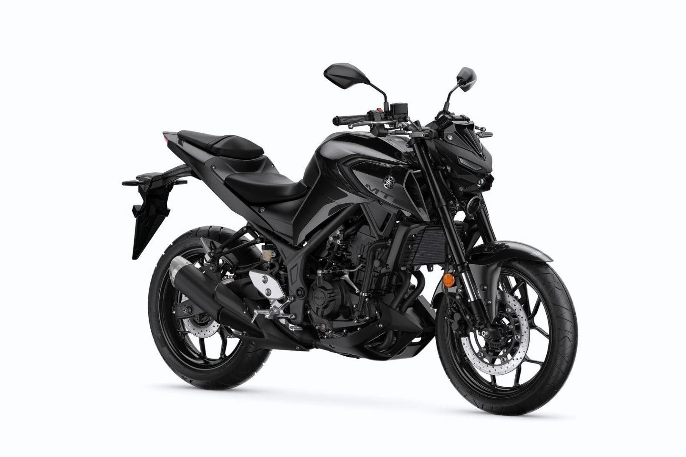

Yamaha MT-03
The Yamaha MT-03 delivers big-bike looks and performance in a compact, beginner-friendly package. With aggressive MT styling, a responsive twin-cylinder engine, and agile handling, the MT-03 is built for riders who want confidence, control, and daily riding fun.
Specifications
- Engine displacement: 321 cc
- Power output: approx. 30.9 kW (42 hp)
- Engine type: 2-cylinder, liquid-cooled
- Transmission: 6-speed
- Fuel system: Electronic fuel injection
Chassis & Brakes
- Front brake: 298 mm disc
- Rear brake: 220 mm disc
- Front suspension: 37 mm KYB Upside-down fork
- Rear suspension: Monoshock
- ABS: Standard
Dimensions & Weight
- Seat height: 780 mm
- Wet weight: approx. 169 kg
- Fuel tank capacity: 14 liters
Key Features
- Aggressive MT design with LED lighting
- Smooth and responsive twin-cylinder engine
- Lightweight chassis for agile city and sport riding
- Full LCD instrument panel
- Perfect for A2 license holders
Price: CHF 6,490.–
← Back to overview